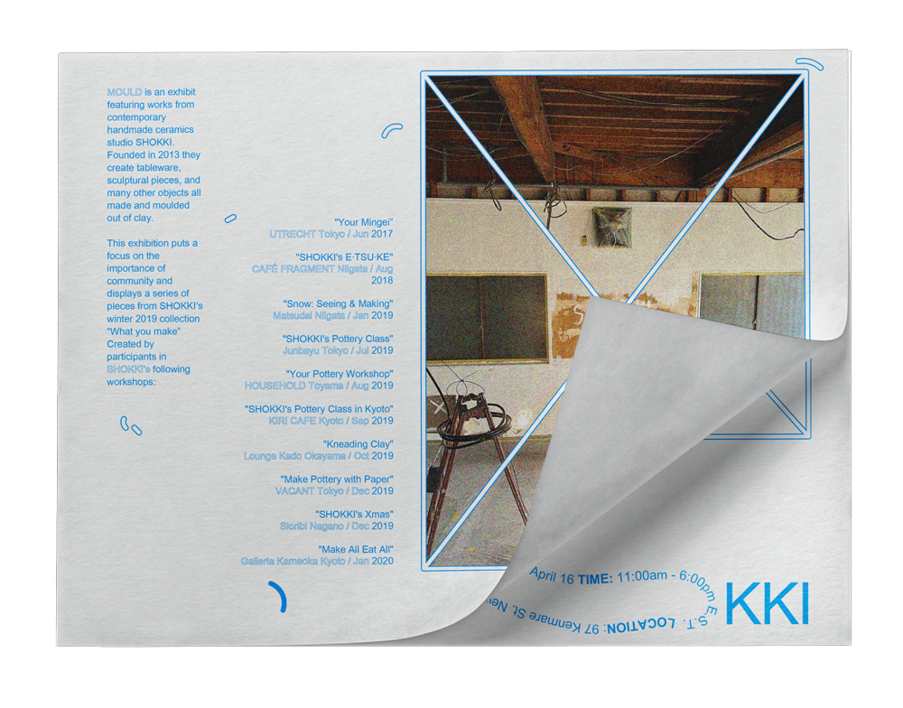
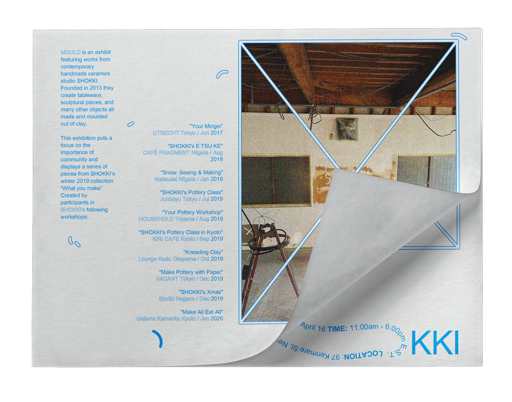
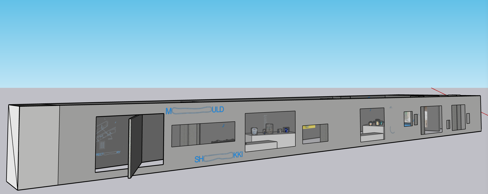

#068DFC / #e6e6e6
 

LOCATION
The Storefront for Art and Architecture /
97 Kenmare St, New York, NY 10012 1993
[b] text: 24pt Arial Unicode MS
[c] text: 24pt Arial Unicode MS / outline stroke
BASIC FLOORPLAN

ELEVATION
CONSTRUCTION
 INTERACTIVE
INTERACTIVE To encourage collaboration, and creation, pieces of clay, that have been prepared for guests will be provided with the intention that they take them home and mould them, then bring them back to be fired.
+the intention of returning to the exhibit allows people to meet new creatives within the community and see what others have created.

01 basket / spring / 2021

02 tape dispenser / spring / 2021

03 “Coriolis”
basket / spring / 2021
04 “Too Much to Match 14-3: DOOKS”
book case / winter / 2021

05 mug / winter / 2019
06 “What you Make”
candle holder / spring / 2021

07 “What you Make”
mug / spring / 2021

08 “What you Make”
mug / spring / 2021
09 “What you Make”
mug / spring / 2021
10 “What you Make”
pitcher / spring / 2021
11 “What you Make”
pitcher / spring / 2021
12 “What you Make”
bowl / spring / 2021
13 “What you Make”
basin / spring / 2021
14 “What you Make”
object / spring / 2021
15 “What you Make”
vase / spring / 2021
16 “What you Make”
pitcher / spring / 2021
17 “What you Make”
table / spring / 2021
18 “What you Make”
figure / spring / 2021
19 “What you Make”
pitcher / spring / 2021
20 “What you Make”
pitcher / spring / 2021
“What you make” a collection created by participants in SHOKKI's workshops: "Your Mingei” UTRECHT Tokyo / Jun 2017 "SHOKKI's E·TSU·KE" CAFÉ FRAGMENT Niigata / Aug 2018 "Snow: Seeing & Making" Matsudai Niigata / Jan 2019 "SHOKKI's Pottery Class" Junbayu Tokyo / Jul 2019 "Your Pottery Workshop" HOUSEHOLD Toyama / Aug 2019 "SHOKKI's Pottery Class in Kyoto" KIRI CAFE Kyoto / Sep 2019 "Kneading Clay" Lounge Kado Okayama / Oct 2019 "Make Pottery with Paper" VACANT Tokyo / Dec 2019 "SHOKKI's Xmas" Sioribi Nagano / Dec 2019 "Make All Eat All" Galleria Kameoka Kyoto / Jan 2020